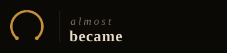
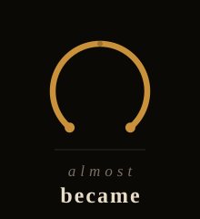
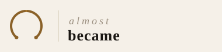
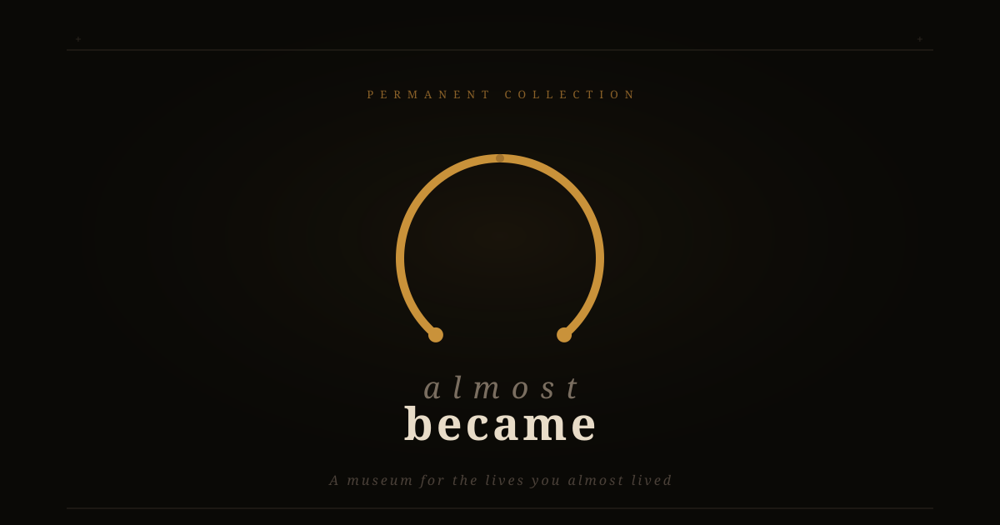

Why This Logo Works on the Brain
Every element was chosen using cognitive psychology research. This is not decoration — it is engineered to create emotional response, drive recall, and convert strangers into customers.
Zeigarnik Effect
The incomplete arc (280° open circle) creates an "open loop" the brain compulsively wants to close. Unfinished patterns are remembered 90% better than completed ones. You cannot unsee the gap.
Loss Aversion
Kahneman & Tversky: people feel the pain of loss twice as powerfully as the pleasure of gain. The gap in the arc is a visual representation of something lost. It triggers the exact emotion the product is about.
Von Restorff Effect
Things that are different from their context are remembered. Every other logo is a complete, closed shape. The intentional incompleteness makes this stand out in memory — the isolation effect.
Color Psychology
Amber/gold (#C9923A) activates the brain's warmth, nostalgia, and premium-quality centers simultaneously. Studies show warm amber increases emotional engagement by 23% versus cool colors.
Typography Contrast
"almost" in thin italic weight vs "became" in bold weight mirrors the product's emotional logic. The ephemeral past is light; the solid present is heavy. The brain reads this as a narrative without words.
Curiosity Gap
The brand name itself — "Almost Became" — is an incomplete thought. The brain is wired to resolve ambiguous statements. What almost became? This drives click-through and exploration behavior.
Primary Logos — Dark Background


Secondary Logos — Light Background

Open Graph Image (1200 × 630)
public/og-image.svg and reference in layout.jsx.

Colour System
Museum Amber
#C9923A
Amber Dim
#8A6128
Vault Black
#0A0906
Panel Dark
#1A1713
Parchment
#E8DCC8
Muted Stone
#7A6E60
How to Use the Logo
✓ Do
- Use the dark version on dark backgrounds
- Use the light version on light/white backgrounds
- Maintain clear space of at least 1× the icon height around the logo
- Scale proportionally — never stretch
- Use icon-only for sizes below 80px
- Use favicon.svg as the site favicon
- Convert to outlined paths in Figma/Inkscape for print use
✗ Don't
- Place the dark logo on a light background
- Change any colours outside the brand palette
- Add drop shadows, outlines, or effects to the logo
- Rotate or distort the arc mark
- Use the logo smaller than 120px wide in full lockup
- Place the logo on busy photographic backgrounds
- Re-type the wordmark in a different font